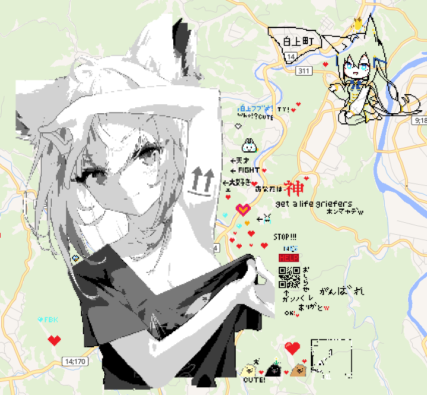
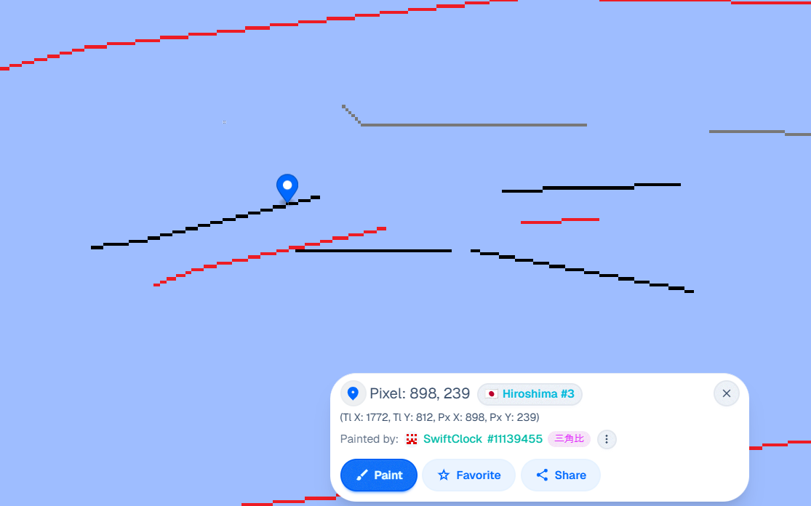
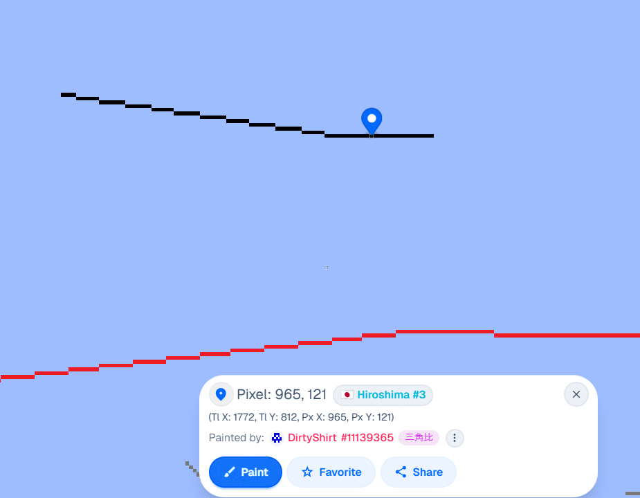
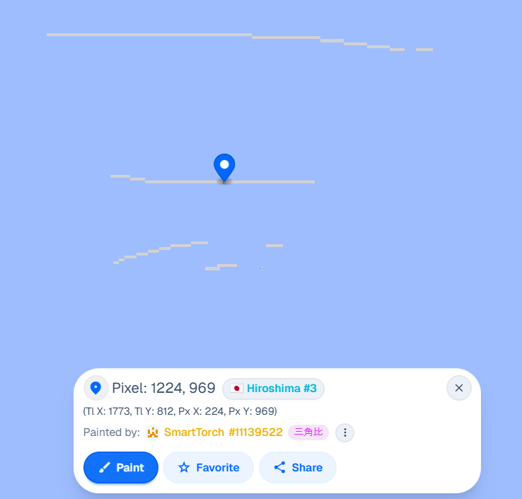
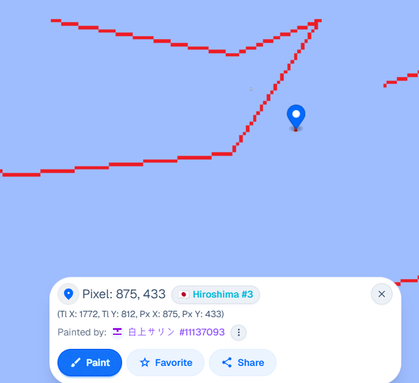

『お知らせ』
★25.09.03 アプデ★

沢山のご協力本当にありがとうございました！皆さんのおかげで無事防御しつつ完成まで出来ました！
その間多分何回か荒らされましたが10分くらいですぐ直されました。本当に想像以上の火力でびっくりしてました！
完成後、24時間くらい経ってる時点でこれを作成していますけど、あいつ心折れたか飽きたか、たぶん一度も来ませんでした。
やっとこれで平和を取り戻したかと思ったんですけど、油断は禁物です。なぜなら、
今日QRの方見てたら点１個出来てて確認したらあいつでした。元の名は「V豚さよなら」。チーム名も「kokyo-boei」に変わってる。
今日この地域ランキングも一応確認したらあれ？今日荒されてないはずやのにおるやんけ、って周りちょっと探してたら上の海に
いました。
なんか怪しいなぁと思ってあれ全部確認してみたら、




そう...こいつまだ辞めるつもりは無く、下準備をしている模様。
アカウント四つ増やしてるwwwほんまだるすぎー
ここで気付いたけどユーザー名の横の固有番号、作られた順番で付与されるものだった。
白上サリン#11137093
DirtyShirt#11139365
SwiftClock#11139455
SmartTorch#11139522
見てる通り白上サリンを作ってからちょっと後、連続で追加三つの垢作ってる。
垢の数を二倍に増やして、それぞれある程度育てて、出来るだけ一気に荒すつもり。
なので、この戦争まだ終わってません。最後まで気を抜かないでください！
で、ここでなんと！？！？！？
書き終わった直後いきなり二次戦勃発！？そんなことあんのwwwwww
で凄すぎるのは荒し始めた同時に直されてるのどうなってんの！？早すぎません！？超びっくり
おい君...ほんと大丈夫なのかなぁwwwぼろ負けてるぞお前。もうちょっと奮発しろよ(笑)
ここで新たな垢確認。一番最新に作られたGiantMat#11142806
★25.09.02 アプデ★
ちょっと休んでる間情報量増えすぎて追いつかなぇ！www
できとーにアプデとか色々呟く。
？
wwwwww自分の発言自分ですぐ破ってて草wwwwwwwwwwwwwwwなんだいきなり？ビビった？wwwちゃんとQR定期的に確認してんのくさ、
こっちのスレ見られるだけでもう俺は目的達成やでw そしてね、このQRなんだけど、もう日本全国に10箇所以上作ってるよwww頑張って全部探してね～～～～～^^
ああ、最初にちょっと工夫して極限までちっちゃくした甲斐があったな～もう元画像見なくても覚えっちゃったよ～
X確認したらメディア欄の投稿も消してるwww
雑な意見↓
お前さぁwwwそれ直して何の利益になるの？やらんやらん！そうそうそう！ちゃんと見てて偉いよ君！その養豚場のイベントの準備よ！前回のイベントの収益いくらだと思う？15万3000円だぞ～
印刷費6万6000円、参加費8000円除いて＋7万9000円ですよ。それで美味しチー牛いっぱい食うぞ～
お前は？それ荒して収益でる？wwwかかってこいよってこちのセリフだよ、会場まで来いよ？おいっっっっしいいチー牛おごってあげるからwwww
あ、そっか！ここまで来る交通費がもっと高いんかww残念ねwwwwwイベント当日画面前で俺のXのイベントワイワイ楽しんでる更新見ながらWplaceでそのクソくだらない遊びでもしろよwwwwww
見てるとおりほぼ一時間ごとずーっと確認しに来てるの草、そんなにやる事無いんかよほんまにwww金稼ぐ方法でも調べよ？あ、まだガキやからダメかw...
そしてね、その白上、そこだけだとおもう？
はい！ここで極秘プロジェクト大公開！！！！！！！！！！！ほんとバカだな君wwwwそこ直してない間にクソ余ってるピクセルどこに使われてると思う？
２体目の白上ができちゃったよwwwwwwwwwww場所は教えられないけど、頑張って探して荒しに来てね(笑)www ちなみに今回は国外だよwwww世界中のどこかの海だよwwwwww果たしてここも見つけられるのかしら！？
まぁ正直、荒しに関して私は全然気にしてないですwww。どうせあいつらは人生で達成した一番偉い実績がこれくらいしかない可哀想な生き物たちなんだからですねw おめぇら言える言葉弱男V豚しかいねぇのかよw 一生マケイヌとかミジメナ人生とか自己紹介しまくってクソワロタwww
これの経過を眺めながらどうやったら
1. 荒しの管理をしやすくしつつ、こいつらを邪魔するか
2. 直したい方へ元の画像を提供できるのか
3. 荒し達を晒すか
4. 普通に自分の広告用に使えるか
を上手く出来るのかを企んでるのが楽しすぎて興奮しちゃいそうです！！！！！！！！！！(≧д≦)
製作にあたって
それで考えたのがやっぱりQRコードからWEBページへアクセスできる形。今回はGithubを使ってこれを掲載しましたんですけど、ここにもちょっと拘りがあります。
荒しから復元しやすくする為QRコードのピクセルの数をできるまで減らす必要があります。QRコードに入力する文字数が短ければ短いほどQRコード自体が小さくなる
可能性が高くなるからまず、githubのユーザー名を最大限に短くします。３文字は流石にもうないから、４文字で頑張って探したら出来ました。これで第一関門はクリアです。
さっさとgithubのレポジトリーを生成。適当にwebの基本要素を作ってpublic設定。 次の段階であるQRコードの生成はWEBに検索してみたら色んな所出てきますけど、最初は35X35ピクセルでしたので、総1225ピクセル。自分の制限は現在1090個なので足りません。 他の所もQR生成試してみたら25X25で出来た所もあった。一応これを候補とし、ChatGPTにこのリンクを一番小さいQRコードを作らせていただいたらなんと、21X21で出来ましたwww
これで最悪全消しされても441ピクセルあったらまた作れます(笑)。しかも黒のみ(228個)塗ってもできるwww
今できるベストの対策は多分これ :
1. あいつらに一切餌をあげないこと。個人的に私は復元もそうだと思ってるからあえて直してないですw
2. 通報し続けること。多分何十回したけど運営さん動かんすぎて(泣く)。公式Discord鯖からも出来ます。
3. 多分メインの荒しもう一人しか残ってないから長期戦に持って行ってあいつにもっと面倒くさくする。
他にもあらゆるクリエイティブな方法を使って荒し達を怖がらせましょう♪
ガキどもは頑張って生きろよ、その誇りのミ′ジ′メ′ナ′ジ′ン′セ′イ′を。俺はC107の冬コミの準備をするからね。自信あるなら堂々とコミケ当日の会場まで出てこい！ここだよ → 12月30日１日目サークル「キツコン」(
Circle.ms
)
そーとキツイかもね？果たしてそんなに嫌悪するV島地獄を潜り抜けるのでしょうか！？！？頑張って辿り着いてwww目の前で「こんにちは！Wplaceの荒しの○○です！」と大声で叫んだら新刊一冊無料であげるよw特別にサインもしてあげるからwwwwww
本なら荒し放題でしょ？好き勝手にどうぞ、どうぞ！撮影してXに投稿して誇れ！特別許可するわ！